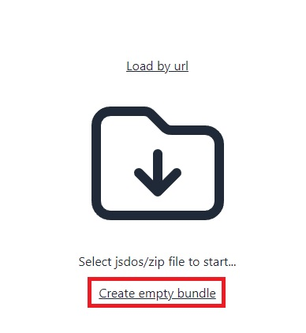
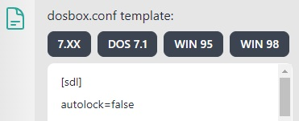
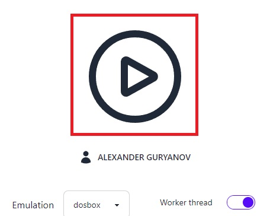
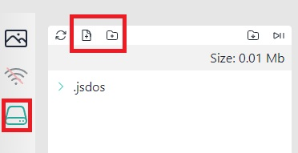
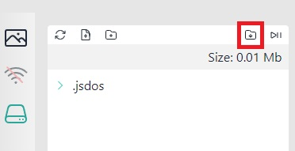
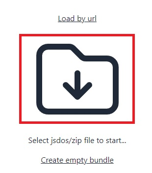

MS-DOS Game
Creating bundles with MS-DOS game
Tutorial Video:
Обучающее видео:
Как крафтить игры от NicCarter54:
To create a bundle, you need to perform the following steps:
1. Create an empty bundle and select dosbox configuration
To do this, press on Create empty bundle link. 
Now you need to select one of the available configurations or write your own. 
7.xx is the best option if your program is a plain DOS program.
2. Run emulator and add program files
Press the "Run" button. 
When the emulator is started, open the File System panel using the disk icon. Use upload file, or upload folder button to add your files to bundle File System.

3. Export result as js-dos bundle
To export use download button.

When a bundle is ready, the browser will prompt you to save it to your computer. Now that you have a bundle, go ahead and publish it somewhere.
4. Test your bundle
To test your bundle you can use upload bundle option:

Just select your js-dos file and press Play.